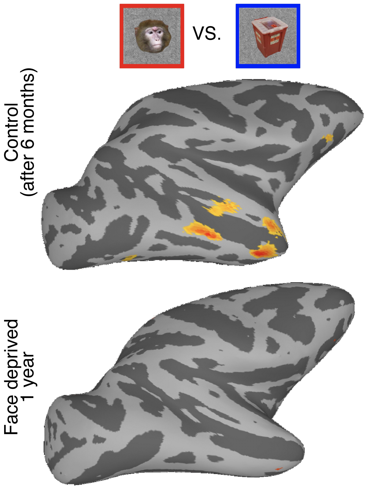
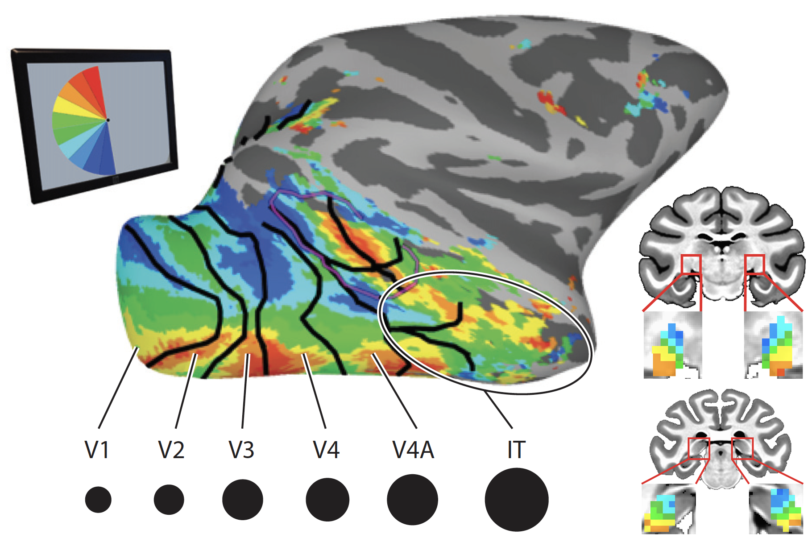

Though an impressive architecture is present in the newborn brain, critical specializations typically found in adults are not yet established. For example, we've shown that cortical domains selectively active when an individual sees a face emerge over early postnatal development and are dependent on early visual experience. Future work will be focused on understanding how the brain learns complex and invariant representations from experiencing our environment.

The anatomical location and functional properties of visual areas are similar across individuals, suggesting an early common program for their development. Our work has demonstrated that the primate brain already comprises a rich topographic representations of sensory space at birth even in brain regions thought to support behaviors that remain immature throughout early postnatal development. We've demonstrated that this organization provides a scaffolding for subsequent functional specialization of brain regions.
One simple but powerful feature of brain organization is that similar functions tend to be located in close spatial proximity. In the visual cortex, this manifests as retinotopy, where adjacent neurons along the cortical surface receive input from adjacent points on the surface of the retina. Our work has demonstrated that retinotopic maps are pervasive throughout the entire visual system, support distinct visual functions, and provide a framework for establishing functional homologies across primates.
